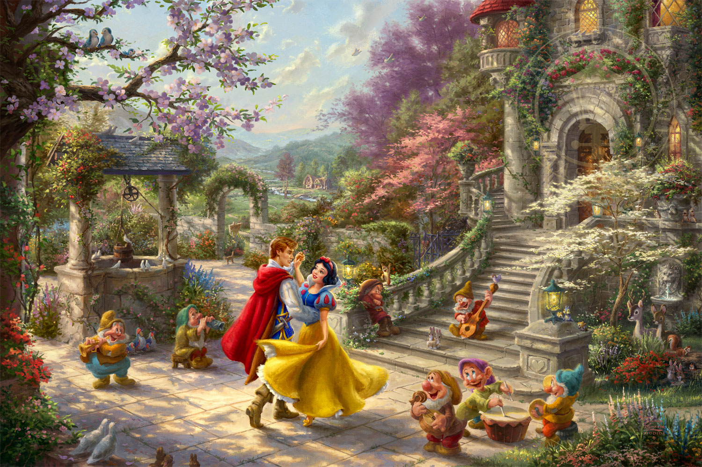

Snow White and the Seven Dwarves
Overview
Snow White and the Seven Dwarves is a 19th century German fairy tale, written by The Brothers Grimm. Its original title was Sneewittchen, and the final revision was written in 1854.
Plot
Snow White is a princess, whose mother had died shortly after giving birth to her. WHen she is one year old, her father marries another woman, who is beautiful, but very vain. The new queen has a magic mirror, which she asks every morning:"Magic mirror in my hand, who is the fairest in the land?"To which the mirror replies:
"My queen, you are the fairest in the land."For years, the mirror always gives this answer, which pleases the queen, as the mirror cannot lie. However, as years go by, Snow White becomes more and more beautiful each day, until one day, the mirror replies that Snow White is more beautiful than her. This shocks the queen, and she becomes envious. Eventually, the angry queen orders a hunter to take Snow White into the deepest part of the woods, and kill her. However, he finds himself unable to kill her. On discovering her stepmother's plan, Snow White cries out:
Spare me, this mockery of justice! I will run away into the forest, and never come home again! Snow WhiteThe hunter slays a wild boar instead, and allows Snow White to escape, giving the queen the boar's heart. Meanwhile, Snow White finds a mysterious cottage in the woods...
History
Scholars have theorised that the story is based on reality. in 1994, Eckhard Sander published Snow White: Fairy Tale or Truth? claiming he had discovered a true account that inspired the story that appeared in Grimm's Fairy Tales. According to Sander, Snow White was based on Margaretha von Waldeck, a german countess, born to Philip IV. At the age of 16, she was forced to move to Brussells by her stepmother. There, she fell in love with the man who would be Philp II of Spain. Her parents disapproved, finding it "politically inconvenient". She died at 21 from poison. It is believed that the King of Spain dispatched the assassins.Scholar Graham Anderson compares Snow White to the Roman Chione (means "Snow" in Greek), who was so beautiful, both Apollo and Mercury fell in love with her. After encounters with both of them, she began to brag that she was more beautiful than the goddess Diana, who shot her through the tongue with an arrow.
Karlheinz Bartels, a Bavarian scholar, found evidence that Snow White was Marie Sophia Margarethe Catharina, a 18th century baroness. After her mother's death, her father remarried. The stepmother was abusive towards the children from the father's first marriage. The Prince Elector of Mainz had gifted her a mirror, which may be the magic mirror in the story.